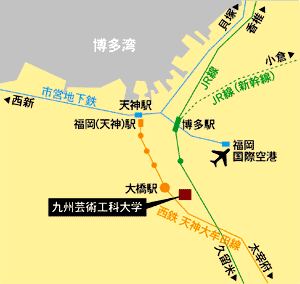
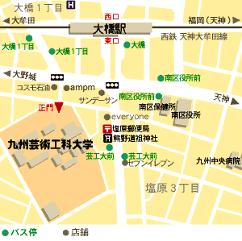
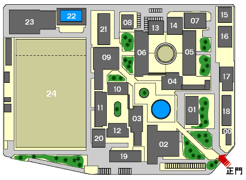
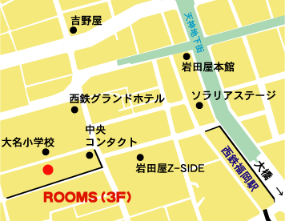

|
access
>> Kyushu Institute of Design
|
|
|
〒815-8540
福岡市南区塩原4-9-1 九州芸術工科大学
Tel : 092-553-4400 （代表）
URL : http://www.kyushu-id.ac.jp/
福岡市の鉄道と芸工大の位置
1.西鉄福岡（天神）駅より
・西鉄天神大牟田線：大橋駅下車
徒歩５分
・タクシー：15分
2.JR博多駅より
・バス（47番、48番）：芸工大前下車
徒歩3分
・市営地下鉄：天神駅下車
西鉄天神大牟田線へ乗り換え
・タクシー：20分
3.福岡国際空港より
・市営地下鉄：天神駅下車
西鉄天神大牟田線へ乗り換え
・タクシー：30分
|
 |
| |
大橋駅近辺地図
大橋駅東口より徒歩5分
|
 |
| |
学内配置図
3号館（図中07番) 5F
00 警務員室
01 管理棟
02 多次元デザイン実験棟
07 3号館
14 音響特殊棟
|
 |
|
|
|
access
>> ROOMS
|
|
|
〒810-0041
福岡市中央区大名2-1-50 cafe galleria 3F
Tel : 092-751-0075
URL : http://saito-kikaku.co.jp/rooms/
福岡市の鉄道とROOMSの位置
1.西鉄福岡（天神）駅より
・徒歩 １０分
|  |
|
©2002, FREQ Executive Committee.
|